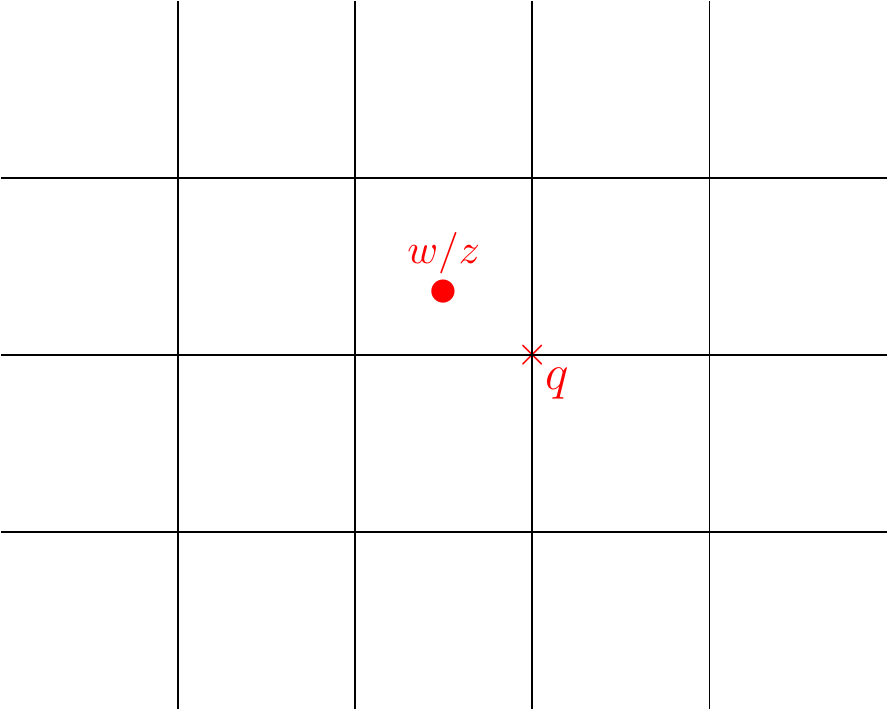

4 Special Types of Rings and Ideals
4.1 Principal Ideal Domains
Definition 4.1 (Principal Ideal Domain) An integral domain in which every ideal is principal is called a principal ideal domain, or PID for short.
Lemma 4.1 The ring \(\Z\) is a PID
Let \(I\) be any ideal of \(\Z\). Then \((I,+)\) is a subgroup of \((\Z,+)\). Since \((\Z,+)\) is a cyclic group generated by \(1\), and every subgroup of a cyclic group is cyclic, it follows that \((I,+)\) is cyclic generated by some \(m \in \Z\). Thus, \(I= ,\Z = \{mk: k \in \Z\}\).
Example 4.1 What about other PID’s? The following are examples of PID’s:
- Polynomials in one variable over a field
- \(\Z[\sqrt{2}]\) is a PID.
- \(\Z[i]\) is a PID (as we will see later).
We now reconsider an old idea in terms of principal ideals.
Lemma 4.2 Let \(R\) be a commutative ring and let \(a,b\in R\). Then \(a \divides b\) if and only if \(bR \subseteq aR\).
- (\(\Rightarrow\))
- Suppose that \(a \divides b\). Then \(b = as\) for some \(s \in R\). It follows that \[bR = \{ b r: r \in R\} = \{asr: r\in R\} \subseteq aR.\]
- (\(\Leftarrow\))
- Suppose that \(bR\subseteq aR\). Now \(b = b1_R \in bR\) and so \(b \in aR\). This means we can find an \(s \in R\) such that \(b = as\) as required.
Example 4.2
Let \(R=\Z\) and consider the principal ideal \(3\Z= \{\ldots, -9,-6,-3,0,3,6,9,\ldots\}\). Now \(6\Z = \{ \ldots,-12, -6,0,6,12, \ldots\}\) is clearly a subset of \(3\Z\) and \(3|6\).
4.2 Maximal Ideals
Definition 4.2 (Maximal ideal) Let \(R\) be a ring and let \(I\) be an ideal of \(R\). We say that \(I\) is a maximal ideal of \(R\) if \(I\neq R\) and, whenever \(J\) is an ideal of \(R\) then
Example 4.3
In the ring \(R= \Z\), for a prime \(p\), the ideal \(p\Z\) is maximal. Suppose \(p\Z\subseteq J\) for an ideal \(J\) of \(\Z\). Now as \(\Z\) is a PID, \(J = m \Z\) for some \(m \in \Z\). By Lemma 4.2, since \(p\Z \subseteq m\Z\), it follows that \(m|p\). Thus \(m=1\) or \(m=p\). In which case \(m\Z = p\Z\) or \(m\Z = \Z\).
Consider \(R=\Z_{12}\). We claim that \(2R\) is a maximal ideal. Let \(J\) be any ideal of \(R\) such that \(2R \subseteq J\). There are two ways to proceed, since \((J,+)\) is a subgroup of \((\Z_{12},+)\) and \((\Z_{12},+)\) is cyclic generated by \(1\), it follows that \(J = mR\) for some \(m \in \Z_{12}\). By Lemma 4.2 again, it follows that \(m|2\) and so \(m=1\) or \(m=2\). Thus \(mR\) is either \(2R\) or \(R\).
An alternative argument is as follows. Suppose that \(J \ne R\). We will show that \(J = 2R\). Since \(J \ne R\), then \(J\)t cannot contain any of the units of \(R\). The units of \(R\) are precisely, \(1, 5,7\) and \(11\) (all elements of \(\Z_{12}\) co-prime to \(12\).) Now, if \(J \ne 2R\), then \(J\) must contain both \(3\) or \(9\) (since \(9\) is the additive inverse of \(3\) in \(Z_{12}\) and so if \(J\) contains \(3\) is must also contain \(9\) and vice versa). However if \(3 \in J\), since \(2R \subseteq J\), it follows that \(2+3 =5 \in J\), in which case \(J = R\) yielding a contradiction. Thus, it must be the case that \(J = 2R\) as required.
Lemma 4.3 Let \(R\) be a commutative ring and let \(I\unlhd R\). Then \(R\diagup I\) is a field if and only if \(I\) is a maximal ideal.
- (\(\Rightarrow\))
- Suppose \(R\diagup I\) is a field. Let \(J\) be any ideal of \(R\) such that \(I \subseteq J\). We observe that \(J/I\) is an ideal of \(R/I\). Clearly \(J/I\) is a subring of \(R/I\). Let \(r+I \in R/I\) and \(j+I \in J/I\). Then \[(r+I)(j+I) = (rj)+I = (jr) +I = (j+I)(r+I) \in J/I.\] Therefore \(J/I\) is an ideal of \(R/I\). Since \(R/I\) is a field, then by Theorem 3.2, \(J/I\) is either equal to \(\{0_{R/I}\}\) or \(R/I\). If \(J/I = \{0_{R/I}\}\), then \(J = I\), while if \(J/I = R/I\) then \(J=R\). Therefore, as \(J\) was an arbitrarily chosen ideal containing \(I\), it follows that \(I\) is a maximal ideal of \(R\).
- (\(\Leftarrow\))
- Suppose \(I\) is a maximal ideal of \(R\). We may assume that \(R/I\) is non-zero since otherwise we are done. Let \(r+I\) be any non-zero element of \(R/I\). It follows that \(r \ne I\). Set \(J = (rR + I)\). Notice that \(J\) is an ideal of \(R\) (since the sum of two ideals is again an ideal) and \(I \subsetneq J\) since \(r = r1_{R} + 0_{R} \in J\backslash I\). Since \(I\) is maximal then \(J\) is either \(I\) or \(R\). Thus \(J\) must be equal to \(R\) as \(J/I \ne \{0_{R}+I\}\). This means there is an element \(s \in R\) and an element \(l \in I\) such that \(rs +l = 1_{R}\). Therefore \(rs - 1_{R} \in I\). It follow then that \[(r+I)(s+I) = (rs) + I = (sr) + I = (s+I)(r+I) = I\] by Lemma 3.9. Therefore \((r+I)\) is an invertible element of \((R/I)\). We conclude, since \((r+I)\) was an arbitrarily chosen non-zero element of \(R/I\), that every non-zero element of \(R/I\) is invertible and \(R/I\) is a field.
Example 4.4
We have seen that all ideals of \(\Z\) have the form \(n\Z\) for some \(n \in \Z\). The question now arises: for which \(n\) is the ideal \(n\Z\) maximal?
Define the homomorphism \(\theta: \Z \to n\Z\) given by \(\theta(a) = [a]_{n}\). It is an exercise to verify that \(\theta\) is a ring homomorphism.
Notice that \[\ker(\theta) = \{ a \in \Z : [a]_{n}= [0]_{n} \} = \{ a \in \Z: n|a\} = \{kn : k \in \Z \} = n\Z.\]
By the First Isomorphism Theorem (Theorem 3.4) \(R/\ker(\theta) \cong \Z_{n}\). By Lemma 4.3 \(\Z_{n}\) is a field if and only if \(n\Z\) is a maximal ideal. We know that \(\Z_{n}\) is a field if and only if \(n\) is prime. It follows that \(n\Z\) is a maximal ideal if and only if \(n\) is prime.
Theorem 4.1 If \(R\) is a PID, then for a non-zero, non-unit element \(x \in R\), \(xR\) is maximal if and only if \(x\) is irreducible.
- (\(\Rightarrow\))
- Suppose \(xR\) is maximal and \(x = yz\) for some \(y,z \in R\). Then by Lemma 4.2, \(xR \subseteq yR\). Since \(xR\) is maximal, then \(yR = R\) or \(yR = xR\). If \(yR =R\) then \(y\) is a unit. If \(yR = xR\), then there is an \(r \in R\) such that \(y = xr\). It follows that \(x=yz = xrz\). Since \(R\) is an integral domain, and \(x \ne 0_{R}\), we conclude that \(rz = zr =1_{R}\) and \(z\) is a unit.
- (\(\Leftarrow\))
- Suppose \(x\) is irreducible. Let \(J\) be any ideal such that \(xR \subseteq J\). Since \(R\) is a PID, there is a \(y \in R\) such that \(J = yR\). Since \(xR \subseteq yR\), then \(x = yz\) for some \(z \in R\). Since \(x\) is irreducible, then \(y\) or \(z\) is a unit. If \(y\) is a unit, we are done. If \(z\) is a unit. Then \(xz^{-1} = y\), in which case \(yR \subseteq xR\) and so \(J=yR = xR\).
4.3 Prime ideals
Definition 4.3 (Prime ideal) Let \(R\) be a commutative ring. An ideal \(P\) of \(R\) is a prime ideal if \(P\neq R\) and \[ xy\in P\Rightarrow x\in P\:\:\text{or}\:\: y\in P. \]
Example 4.5
Consider the \(R= \Z\) and \(p\) a prime. Then \(p\Z\) is a prime ideal. For if \(xy \in p\Z\), then \(p|xy\). Since \(p\) is prime, then \(p|x\) or \(p|y\).
In \(\Z[x]\), then the ideal \(I = 2\Z[x] + x\Z[x]\) is a prime ideal. This is the ideal of all polynomials over \(\Z\) with an even constant term.
Lemma 4.4 Let \(R\) be a commutative ring and let \(I\unlhd R\). Then \(R\diagup I\) is an integral domain if and only if \(I\) is a prime ideal.
- (\(\Rightarrow\))
- Suppose \(R/I\) is an integral domain. Let \(x,y \in R\) be such that \(xy \in I\). Then it follows that \((x+I)(y+I) = (xy)+I = 0_{R}+I\). Since \(R/I\) is an integral domain, then \(x+I = 0_{R} +I\) or \(y+I = 0_{R}+I\). Thus, \(x \in I\) or \(y \in I\).
- (\(\Leftarrow\))
- Suppose that \(I\) is a prime ideal. Let \(x+I, y+I \in R \diagup I\) be such that \((x+I)(y+I) = xy +I = 0_{R} + I\). It follows that \(xy \in I\). Since \(I\) is a prime ideal, \(x \in I\) or \(y \in I\). In which case, \(x+I = 0_R +I\) or \(y+I = 0_R +I\) and \(R \diagup I\) is an integral domain.
Theorem 4.2 Let \(R\) be a PID. Then:
- every nonzero prime ideal is maximal;
- every irreducible element is prime.
- Let \(I\) be a nonzero prime ideal of \(R\). Let \(J\) be any ideal of \(I\) such that \(I \subseteq J\). There are \(x,y \in R\) such that \(I= xR\) and \(J = yR\). Since \(I \subseteq J\) it follows that \(x = y z\) for some \(z \in R\). Thus \(yz \in I\). Since \(I\) is a prime ideal, then \(y \in I\) or \(z \in I\). If \(y \in I\), then \(yR \subseteq xR\) and \(I = J\). If \(z \in I\), then \(z = xt\) for some \(t \in R\). In which case \(x = yxt = xyt\). Since \(x\) is nonzero, (as \(xI\) is nonzero), and \(R\) is a PID, then \(yt = 1_{R}\) and \(yR = R\). It follows that any ideal which contains \(I\) is either equal to \(I\) or \(R\).
- Let \(x\) be an irreducible element of \(R\). Then \(xR\) is a maximal ideal and so \(R/xR\) is a field. A field is an integral domain and so \(xR\) is a prime ideal. Thus, if \(x|yz\) for some \(y,z \in R\), then \(yz \in xR\) and so \(y \in xR\) or \(z \in xR\), in other words, \(x|y\) or \(x|z\). Therefore \(x\) is prime.
Example 4.6 The ring of Gaussian Integers \(\mathbb{Z}[i]=\{a+ib : a,b\in\mathbb{Z}\}\) is a PID.
Since \(\Z[i]\) is a subring of \(\C\), then \(\Z[i]\) is an integral domain. Set \(R = \Z[i]\) and let \(I\) be any nonzero ideal of \(R\). Let \(z \in I\) be a non-zero element such that \(|z|\) is minimal amongst the elements of \(I \backslash \{0\}\). We note that \(z\) exists since \(I\) is non-zero.
We show that \(I = zR\). Clearly, as \(z \in I\), then \(zI \subseteq I\). It remain show then that \(I \subseteq zI\).
Let \(w \in I\) be any non-zero element. Consider the element \(w/z \in \C\). We can find a \(q \in R\) such that \(|w/z -q|^2 \le 1/2\).

Set \(r = w - qz\), and observe that \(r \in I\) since both \(w\) and \(qz\) are elements of \(I\). We compute \[\begin{eqnarray*} |r|^2 = |w-qz|^2 = |z|^2|w/z -q|^2 \le |z|^2/2. \end{eqnarray*}\]
Thus, \(|r| < |z|\) and so \(r\) must be equal to \(0_{R}\) (since \(|z|\) is smallest amongst all non-zero elements of \(R\)). We conclude that \(w = qz\) and so \(I = zR\).
4.4 Unique Factorisation Domains
Consider in \(\mathbb{Z}\) the factorisation of the integer \(308\) : \[2^2 \times 7 \times 11\] and \[ 11 \times 7 \times 2^2.\] Clearly these two factorisations should be regarded as the same since \(\mathbb{Z}\) is commutative. We also observe that these factorisations for \(308\) are complete and so are superior to, say, \(308=14\cdot22\).
Causing us slightly more trouble is the notion that we can change the sign of some of the integers without altering the fact that we have a factorisation e.g. \[(-2)^2 \times 7 \times 11.\]
We now set ourselves the task of assessing when two factorisations of an element in an arbitrary commutative ring are ‘essentially the same’.
Definition 4.4 Let \(R\) be a ring and let \(x,y\in R\). We say that \(x\) is associated to \(y\) if there exists a unit \(u\in R\) such that \(ux=y\).
Now let \(r\in R\) be such that Then we say that these factorisations for \(r\in R\) are essentially the same if
- \(s=t\), and
- there exists a permutation \(\sigma\in S_{s}\) such that, for each \(i\), \(x_{\sigma(i)}\) is associated to \(y_{i}\).
Definition 4.5 (Unique Factorisation Domain) Let \(R\) be an integral domain. We say that \(R\) is a unique factorisation domain (or UFD) if every nonzero non-unit of \(R\) can be expressed as a product of irreducibles in an essentially unique way.
Example 4.7
- The ring \(\Z\) is a unique factorisation domain.
- The ring \(\Z[i]\) is a unique factorisation domain.
Definition 4.6 (Greatest common divisor) Let \(R\) be a commutative ring and let \(a,b\in R\). We say that an element \(d\in R\) is a common divisor of \(a\) and \(b\) if \(d\divides a\) and \(d\divides b\).
We say that a common divisor \(d\in R\) of \(a\) and \(b\) is a greatest common divisor of \(a\) and \(b\) if, for all \(c\in R\), \(c\divides a\) and \(c\divides b\imp c\divides d\). In this case we write \(d=\greatcd(a, b)\).
Greatest common divisors in a PID
Let \(R\) be a PID and let \(m\) and \(n\) be elements of \(R\). Consider the ideal \(I = mR + nR\). Since \(R\) is a PID, there is an \(l \in R\) such that \(I = lR\). It follows that \(l|m\) and \(l|n\) since \(m,n \in I = lR\). Therefore \(l\) is a common divisor of \(m\) and \(n\).
Suppose \(k\) is an element of \(R\) such that \(k|m\) and \(k|n\). Then \(mR \subseteq kR\) and \(nr \subseteq kR\). Therefore \(I = (mR + kR) \subseteq kR\). It follows that \(k|t\). Therefore, \(t\) is a greatest common divisor of \(m\) and \(n\).
Example 4.8 Let \(\alpha=6+i\), \(\beta=1+2i\in\mathbb{Z}[i]\). Find a greatest common divisor of \(\alpha\) and \(\beta\) and hence find \(\gamma\in\mathbb{Z}[i]\) such that \(\gamma\mathbb{Z}[i]=\alpha\mathbb{Z}[i]+\beta\mathbb{Z}[i]\).
Let \(\gamma = x+iy\), \(x,y \in \Z\) be an element of \(\Z[i]\) such that \(\gamma \divides\alpha\) and \(\gamma \divides \beta\). It follows that \(|\gamma|^2\divides |\alpha|^2 = 37\) and \(|\gamma|^2\divides |\beta|^2 = 5\). Therefore \(|\gamma|^2 = 1\). Since \(x\) and \(y\) are integers, either \(x^2 = 1\) and \(y=0\) or \(y^2 = 1\) and \(x^2 =0\). Since \(\pm 1\) and \(\pm i\) divide any element of \(\Z[i]\), it follows that \(\{ \pm 1, \pm i\}\) is the full list of (greatest) common divisors of \(\alpha\) and \(\beta\). Therefore, \(\gamma \in \{ \pm 1, \pm i\}\). Notice that \(\gamma \Z[i] = \Z[i]\) for any such choice of \(\gamma\), since \(\pm 1\) and \(\pm i\) are units. Therefore, if \(\gamma\Z[i] = \alpha \Z[i] + \beta \Z[i]\), then \(\gamma\) is a common divisor of \(\alpha\) and \(\beta\) and \(\gamma \Z[i] = \Z[i]\).
Now suppose \(\alpha = 4+3i\) and \(\beta = 2-i\).
Let \(\gamma = x+iy in \Z[i]\) be such that \(\gamma\) divides both \(\alpha\) and \(\beta\). We find that \(|\gamma|^2 \divides 25\) and \(|\gamma|^2 \divides 5\).
if \(|\gamma|^2 \divides 5\), and \(|\gamma|^2 \ne 1\) then \(|\gamma|^2 = 5\). Therefore \(x^2 +y^2 = 5\). The only integer solutions to this are \(x = \pm 2\) and \(y =\pm 1\) or \(x = \pm 1\) and \(y^2 = \pm 2\).
First observe that since \(i(x+iy) = -y + ix\), then any possible common divisors \(\gamma\) with \(|\gamma|^2 =5\) is a product of a unit times an element of \(\{2 +i, 2-i\}\). Therefore if \(\alpha\) and \(\beta\) have a common divisor \(\gamma\) with \(|\gamma|^2 =5\), then either \(2+i\) or \(2-i\) is a common divisor of \(\alpha\) and \(\beta\).
First we try \(\gamma = 2+i\). Let \(a,b \in \Z\) and suppose \((2+i)(a+ib) = 4 + 3i\). Then \((2a-b) + i(a+2b) = 4 + 3i\). Solving these simultaneous equations, we get that \(5a = 11\), but there is no integer \(a\) satisfying this equation. We conclude that \((2+i)\) does not divide \(a\).
Next we try \(\gamma = 2-i\). Let \(a,b \in \Z\) and suppose \((2-i)(a+ib) = 4 + 3i\). Then \((2a+b) + i(-a+2b) = 4 + 3i\). Solving this system of equations, we get \(a = 1\) and \(b = 2\). Therefore \(\gamma \divides a\). Notice that \(b = \gamma\) and so \(\gamma \divides b\).
It follows that \(\gamma = 2-i\) is a common divisor of \(a\) and \(b\). Notice that \(\gamma = 2-i\) must be a greatest common divisor of \(a\) and \(b\) since any other divisor is either a unit or the product of \(\gamma\) and a unit.
Therefore,an element \(\gamma \in \Z[i]\) satisfying \(\gamma \Z[i] = \alpha \Z[i] + \beta\Z[i]\) is \((2-i)\).
4.5 Problem Sheet 4
For Week 10.
Let \(R\) be a PID and \(a,b \in R\) be both nonzero. Show that there is a \(c \in R\) such that
- \(a|c\) and \(b|c\);
- If \(a\divides d\) and \(b \divides d\) then \(c\divides d\).
Let \(R\) be a commutative ring and let \(I_1 \subseteq I_2 \subseteq I_3 \subseteq \ldots\) be a chain of proper ideals of \(R\). Prove that \[I = \bigcup_{i=1}^{\infty} I_{i}\] is a proper ideal of \(R\).
Let \(R\) be a PID, prove that \(R\) is a UFD.
Let \(\F\) be a field. Show that \(\F[x]\) is a principal ideal domain.
[You may use the fact that given \(f,g \in \F[x]\), there exist unique \(q,r \in \F[x]\) such that \(f = qg +r\) and either \(r=0\) or the degree of \(r\) is strictly less than the degree of \(G\).]Consider the ring \(R = \Q[x]\).
- Show that \(x^5-7\) is a prime.
- Let \(I= (x^5 -7)R\). Show that \(R/I\) is a field.
Consider the guassian integers \(\Z[i]\). Let \(\alpha = 10 + 11i\) and \(\beta = 8+i\). Find \(\gamma \in \Z[i]\) such that \(\gamma \Z[i] = \alpha \Z[i] + \beta\Z[i]\).